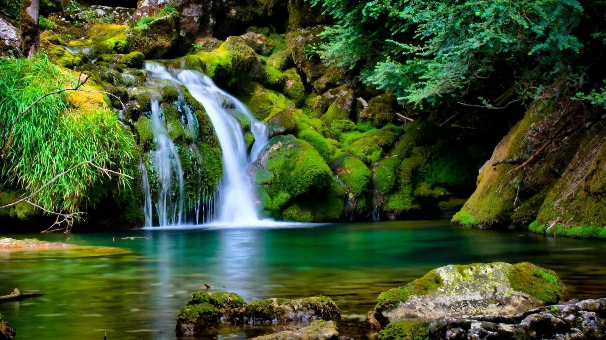
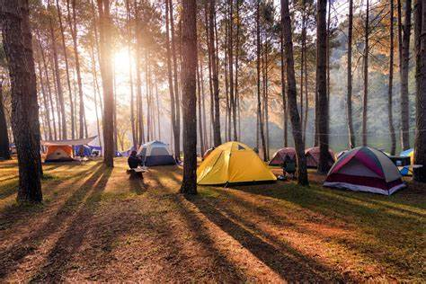
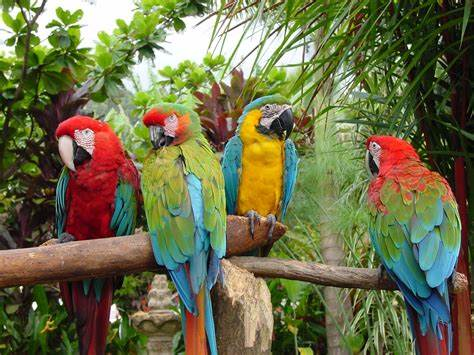
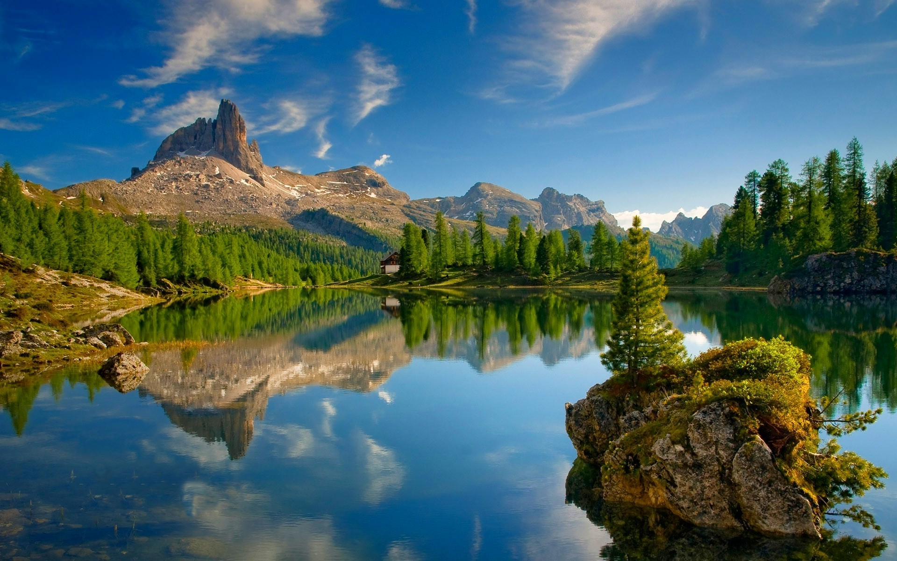
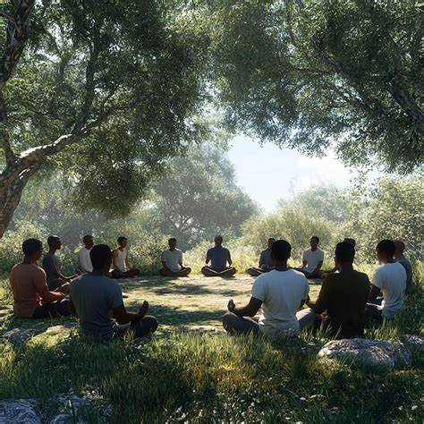
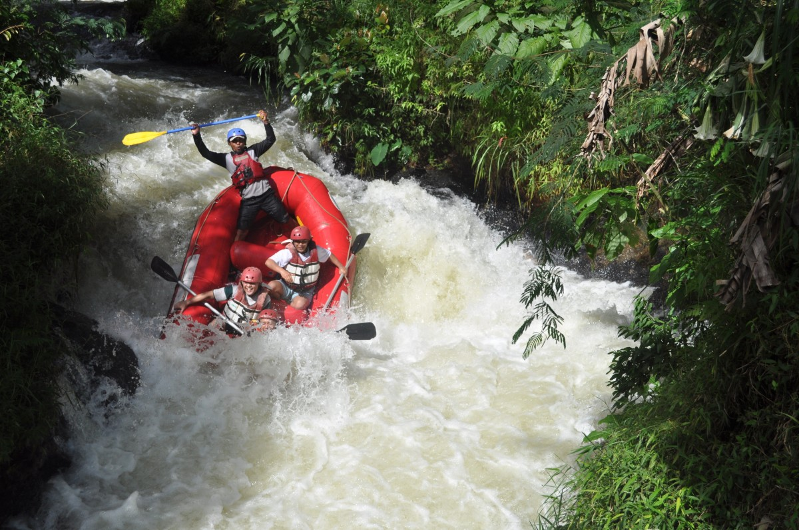
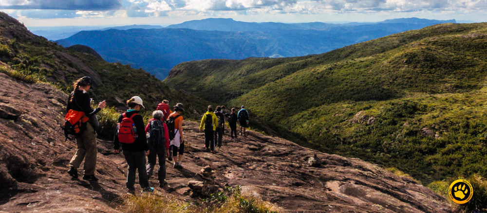
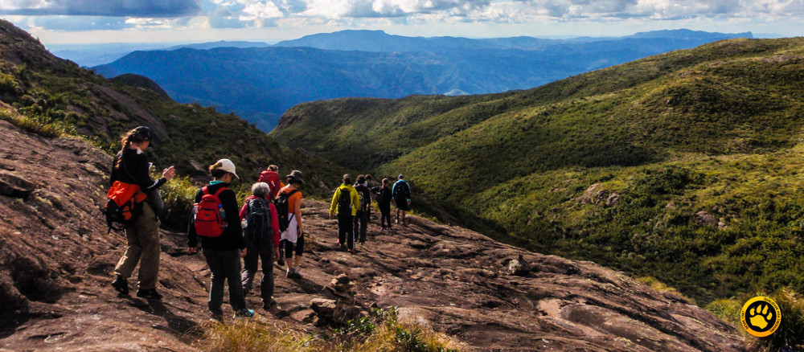
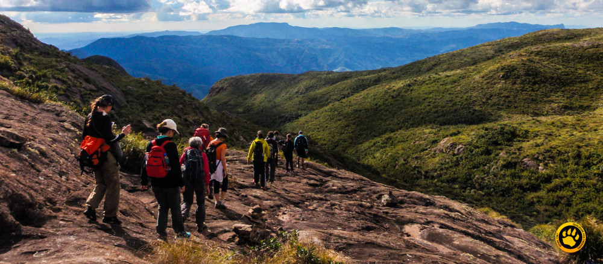
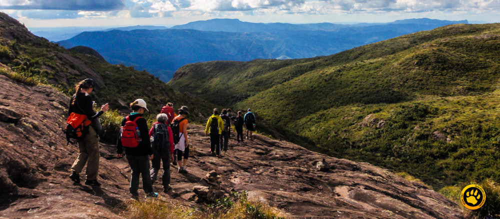

Galeria de Imagens






 


Descubra lugares incríveis e conecte-se com o meio ambiente
Oferece uma forma de lazer que envolve atividades ao ar livre, em ambientes naturais, como trilhas, cachoeiras, parques e reservas ecológicas. Promovendo o contato direto com a biodiversidade e a valorização dos recursos naturais.
Além de proporcionar lazer e diversão, o turismo na natureza traz diversos benefícios para a saúde física e mental, como:
